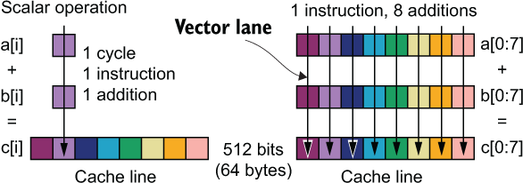
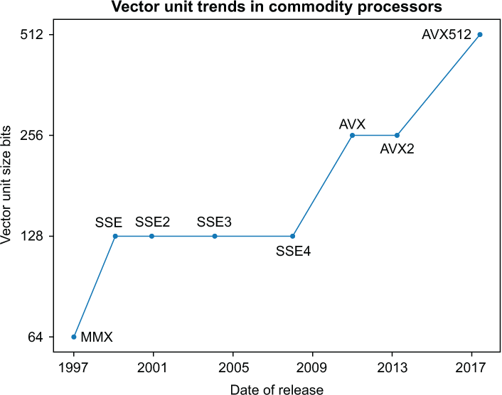
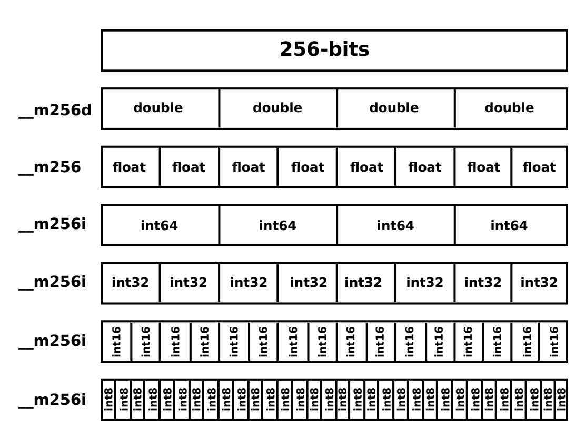
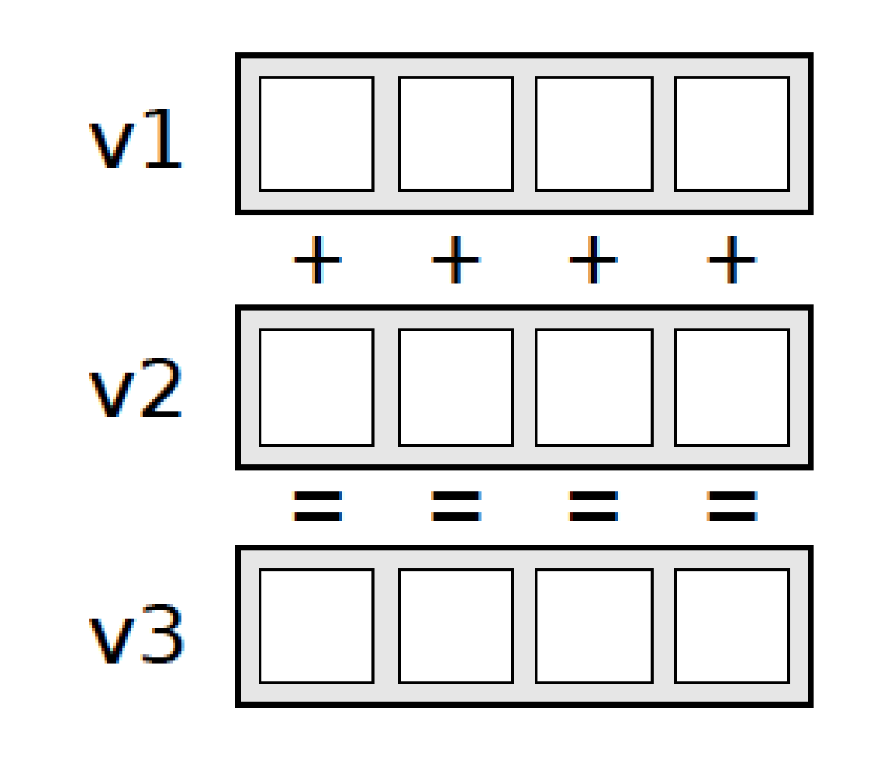

Hardware Vectorization with SIMD
FLOPs for free
CNRS
IMAG
Paul-Valéry Montpellier 3 University
Generalities on SIMD
Why vectorization ?
- Ubiquitousness
-
Almost every CPU made on the market since 2010 got a SIMD unit and it operates on multiple elements at the same time on a single instruction.
- Natural congruence with parallel progamming
-
In a good number of cases, parallelization of algorithm is often achieved by vectorization and the use of SIMD is then a free bonus.
- Performance boost almost guaranteed
-
With a little effort it could boost your performance by a factor of two or more. It is even more energy efficient than raw CPU (non SIMD) computing(Inoue 2016).
Scalar vs Vector operation
A scalar operation does a single double-precision addition in one cycle. It takes eight cycles to process a 64-byte cache line. In comparison, a vector operation on a 512-bit vector unit can process all eight double-precision values in one cycle.
Terminology
- Vector (SIMD) lane
-
A pathway through a vector operation on vector registers for a single data element much like a lane on a multi-lane freeway.
- Vector width
-
The width of the vector unit, usually expressed in bits.
- Vector length
-
The number of data elements that can be processed by the vector in one operation.
- Vector (SIMD) instruction sets
-
The set of instructions that extend the regular scalar processor instructions to utilize the vector processor.
Hardware/Software Requirements
- Generation of instructions
-
vector instructions are generated by the compiler OR manually by the programmer via the “intrisics” (explicit SIMD instructions)
- Matching of instructions
-
matching of the instructions and the hardware, because there is several units and instructions sets. (the compiler does the matching, most of the time).
Short history
Evolution of the vector length
Versions, I
| Release | Functionality |
|---|---|
| MMX (trademark with no official meaning) | Targeted towards the graphics market, but GPUs soon took over this function. Vector units shifted their focus to computation rather than graphics. AMD released its version under the name 3DNow! with single-precision support. |
| SSE (Streaming SIMD Extensions) | First Intel vector unit to offer floating-point operations with single-precision support |
| SSE2 | Double-precision support added |
Versions, II
| Release | Functionality |
|---|---|
| AVX (Advanced Vector Extensions) | Twice the vector length. AMD added a fused multiply-add FMA vector instruction in its competing hardware, effectively doubling the performance for some loops. |
| AVX2 | Intel added a fused multiply-add (FMA) to its vector processor. |
Versions, III
| Release | Functionality |
|---|---|
| AVX512 | First offered on the Knights Landing processor; it came to the main-line multi-core processor hardware lineup in 2017.From the years 2018 and on, Intel and AMD (Advanced Micro Devices, Inc.) have created multiple variants of AVX512 as incremental improvements to vector hardware architectures. |
Anatomy of an intrisic
Vectors types (AVX)
Encoding scheme
_mm256_{operation}{non-alignement}_{dataorganization}{datatype}Add example
Various, I
- s (single): single precision float (32bits)
- d (double): double precision float (64bits)
- i… (integer): integer
- p (packed): contiguous, operates on the whole vector
- s (scalar): operates on a single element
Various, II
- u (unaligned): data non aligned in memory
- l (low): least significant bits
- h (high): most significant bits
- r (reversed): reversed order
References

Hardware Vectorization with SIMDAdvanced Programming and Parallel Computing, Master 2 MIASHS